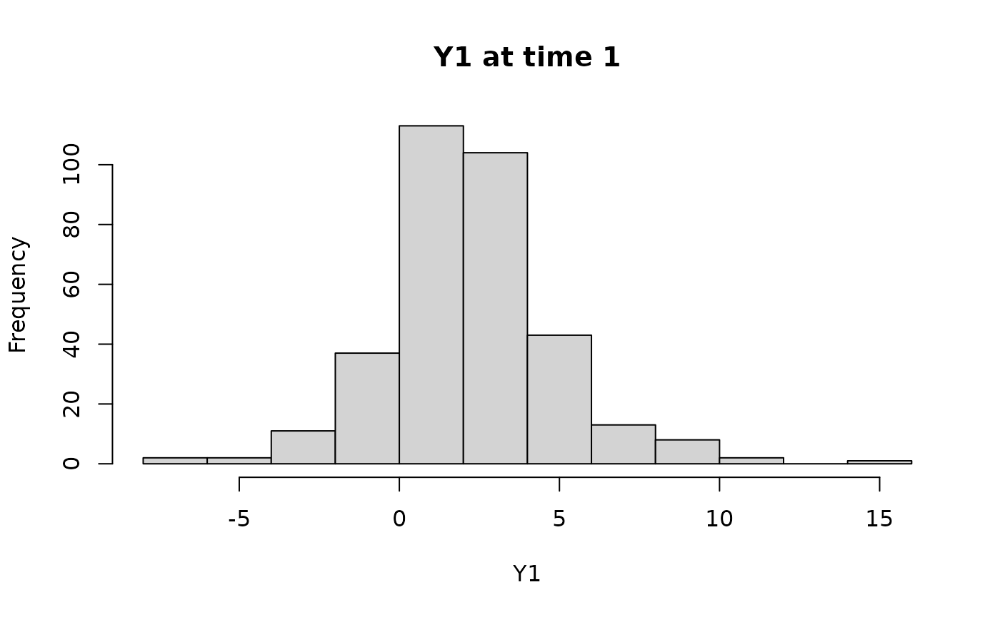
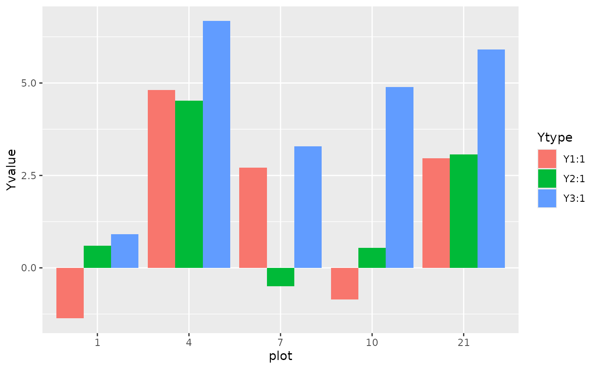

The recommended workflow of DImulti() analyses
Source:vignettes/DImulti_workflow.Rmd
DImulti_workflow.RmdThis vignette aims to give a rough outline for the process to be followed when examining multivariate and/or repeated measures BEF relationship study data using the DImulti() function from the DImodelsMulti R package.
We will use the dataset simMVRM, which is included in the package, to illustrate the workflow of the package.
Examining the data
We always start by looking at our data using View() or head(), to make sure it is as expected and includes all required information.
head(simMVRM)#> plot p1 p2 p3 p4 Y1 Y2 Y3 time
#> 1 1 1 0 0 0 -3.2201614 -0.28424570 4.0353997 1
#> 2 2 1 0 0 0 0.2166701 0.90917719 0.1719544 1
#> 3 3 1 0 0 0 -2.1709989 0.04832118 0.6787839 1
#> 4 4 0 1 0 0 5.3908779 4.08309086 6.5332521 1
#> 5 5 0 1 0 0 5.2733174 4.29488262 6.2761877 1
#> 6 6 0 1 0 0 4.1985826 3.57457447 7.0207313 1We can then look at some summarising metrics, such as the mean of each ecosystem function, separated by time as below, which can help us know what to expect in the analysis, in this case we see that ecosystem functioning improves at time point 2 for the average multifunctionality index, MFindex, but the function <span class”R”>Y2 performs better at time 1.
simMVRM_group <- dplyr::summarise(dplyr::group_by(simMVRM, time),
Y1 = mean(Y1),
Y2 = mean(Y2),
Y3 = mean(Y3),
MFindex = mean(Y1 + Y2 + Y3))
simMVRM_group#> # A tibble: 2 × 5
#> time Y1 Y2 Y3 MFindex
#>
#> 1 1 2.21 3.07 5.53 10.8
#> 2 2 10.3 2.11 7.90 20.3We can also produce plots to the same effect.

Fitting the first model
We use the main function of the DImodelsMulti R package, DImulti(), to fit a repeated measures Diversity-Interactions model to the data.
It is recommended to begin with the simplest model options and increase complexity as model selection/comparisons permit. The simplest model available to be fit by the package is the structural model, “STR”, which only includes an intercept for each time and ecosystem function.
modelSTR <- DImulti(y = c("Y1", "Y2", "Y3"), eco_func = c("NA", "UN"), time = c("time", "CS"),
unit_IDs = 1, prop = 2:5, data = simMVRM, DImodel = "STR", method = "ML")As our dataset is multivariate and in a wide format, we specify our response columns through the parameter y, “NA” through the first index of the vector eco_func, and select the unstructured (“UN”) autocorrelation structure for our ecosystem functions through the second index of eco_func. The data also contains multiple time points, so we pass the column holding the time point indicator through the parameter time, along with the chosen autocorrelation structure, in this case we use compound symmetry, “CS”. To facilitate grouping the recorded responses, a column index for the unique identifier of the experimental units is passed through unit_IDs. We choose to use the maximum likelihood (“ML”) estimation method as we intend to compare models with differing fixed effects.
We can use print() or summary() to view information on the model in our console.
print(modelSTR)#> Note:
#> Method Used = ML
#> Correlation Structure Used = UN@CS
#> Structure Model
#> Theta value(s) = 1
#>
#> Generalized least squares fit by maximum likelihood
#> Model: value ~ 0 + func:time
#> AIC BIC logLik
#> 10020.215 10059.477 -5003.108
#>
#> Multivariate Correlation Structure: General
#> Formula: ~0 | plot
#> Parameter estimate(s):
#> Correlation:
#> 1 2
#> 2 0.603
#> 3 0.031 0.064
#>
#> Repeated Measure Correlation Structure: Compound symmetry
#> Formula: ~0 | plot
#> Parameter estimate(s):
#> Rho
#> 0.3287314
#>
#>
#> Table: Fixed Effect Coefficients
#>
#> Beta Std. Error t-value p-value Signif
#> ------------- -------- ----------- -------- ----------- -------
#> funcY1:time1 +2.210 0.176 12.585 5.172e-35 ***
#> funcY2:time1 +3.068 0.176 17.474 9.193e-64 ***
#> funcY3:time1 +5.530 0.176 31.492 2.749e-177 ***
#> funcY1:time2 +10.287 0.176 58.583 0 ***
#> funcY2:time2 +2.106 0.176 11.992 4.702e-32 ***
#> funcY3:time2 +7.900 0.176 44.989 2.22e-306 ***
#>
#> Signif codes: 0-0.001 '***', 0.001-0.01 '**', 0.01-0.05 '*', 0.05-0.1 '+', 0.1-1.0 ' '
#>
#> Degrees of freedom: 2016 total; 2010 residual
#> Residual standard error: 3.213922
#>
#> $Multivariate
#> Marginal variance covariance matrix
#> [,1] [,2] [,3]
#> [1,] 7.1668 3.59190 0.20620
#> [2,] 3.5919 4.94460 0.34982
#> [3,] 0.2062 0.34982 6.09090
#> Standard Deviations: 2.6771 2.2236 2.468
#>
#> $`Repeated Measure`
#> Marginal variance covariance matrix
#> [,1] [,2]
#> [1,] 13.5390 4.4509
#> [2,] 4.4509 13.5390
#> Standard Deviations: 3.6796 3.6796
#>
#> $Combined
#> Marginal variance covariance matrix
#> Y1:1 Y1:2 Y2:1 Y2:2 Y3:1 Y3:2
#> Y1:1 10.32900 3.39560 6.23260 2.04890 0.32238 0.10598
#> Y1:2 3.39560 10.32900 2.04890 6.23260 0.10598 0.32238
#> Y2:1 6.23260 2.04890 10.32900 3.39560 0.65843 0.21645
#> Y2:2 2.04890 6.23260 3.39560 10.32900 0.21645 0.65843
#> Y3:1 0.32238 0.10598 0.65843 0.21645 10.32900 3.39560
#> Y3:2 0.10598 0.32238 0.21645 0.65843 3.39560 10.32900
#> Standard Deviations: 3.2139 3.2139 3.2139 3.2139 3.2139 3.2139From this evaluation, we can see that each of our coefficients are significant at an alpha significance level of 0.05 (). We can also see the variance covariance matrices for our repeated measures and multiple ecosystem functions, along with the combined matrix, from which we can see the estimated strength and direction of the covarying relationships between response types.
Fitting a Diversity-Interactions model
The next model to be fit is the simplest Diversity-Interactions (DI) model available in the package, the identity (“ID”) structure. The DI modelling framework assumes that the main driver behind changes in ecosystem functioning is the initial relative abundance/proportion of the species.To reflect this, the intercept from the structural model we fit previously is replaced by the initial proportion of the species in the study, each with their own coefficient. These fixed effects form a simplex space. The only code that we need to change for this model is the DImodel tag, from “STR” to “ID”.
modelID <- DImulti(y = c("Y1", "Y2", "Y3"), eco_func = c("NA", "UN"), time = c("time", "CS"),
unit_IDs = 1, prop = 2:5, data = simMVRM, DImodel = "ID", method = "ML")We can now view this model, as before. In this case, we simply extract the t-table from the model summary.
summary(modelID)$tTable#> Value Std.Error t-value p-value
#> funcY1:time1:p1_ID -0.7089886 0.4850517 -1.4616764 1.439876e-01
#> funcY2:time1:p1_ID 2.2706049 0.4850517 4.6811605 3.044755e-06
#> funcY3:time1:p1_ID 2.4398359 0.4850517 5.0300533 5.343174e-07
#> funcY1:time2:p1_ID 8.3721996 0.4850517 17.2604275 2.537220e-62
#> funcY2:time2:p1_ID 3.7953423 0.4850517 7.8246139 8.196811e-15
#> funcY3:time2:p1_ID 4.0229523 0.4850517 8.2938629 1.992354e-16
#> funcY1:time1:p2_ID 5.3748998 0.4642573 11.5774151 4.797017e-30
#> funcY2:time1:p2_ID 5.9337382 0.4642573 12.7811407 5.208852e-36
#> funcY3:time1:p2_ID 7.9975235 0.4642573 17.2264884 4.229086e-62
#> funcY1:time2:p2_ID 12.1055179 0.4642573 26.0750174 3.365045e-129
#> funcY2:time2:p2_ID 3.7172258 0.4642573 8.0068220 1.981376e-15
#> funcY3:time2:p2_ID 10.7688254 0.4642573 23.1958114 1.458556e-105
#> funcY1:time1:p3_ID 3.3833228 0.4816376 7.0246237 2.934612e-12
#> funcY2:time1:p3_ID 1.2053951 0.4816376 2.5027016 1.240448e-02
#> funcY3:time1:p3_ID 4.8562397 0.4816376 10.0827675 2.366669e-23
#> funcY1:time2:p3_ID 12.8552387 0.4816376 26.6906886 1.958774e-134
#> funcY2:time2:p3_ID -2.1517318 0.4816376 -4.4675331 8.356377e-06
#> funcY3:time2:p3_ID 7.7120367 0.4816376 16.0121158 2.241213e-54
#> funcY1:time1:p4_ID -0.1039377 0.5451144 -0.1906714 8.488025e-01
#> funcY2:time1:p4_ID 2.5098803 0.5451144 4.6043189 4.399390e-06
#> funcY3:time1:p4_ID 6.6262284 0.5451144 12.1556668 7.555809e-33
#> funcY1:time2:p4_ID 6.8749751 0.5451144 12.6119869 3.845165e-35
#> funcY2:time2:p4_ID 3.3475340 0.5451144 6.1409757 9.873634e-10
#> funcY3:time2:p4_ID 8.7581311 0.5451144 16.0665942 1.030638e-54The models within the DI modelling framework can be easily compared as they are hierarchical in nature, i.e. they are nested within one another. We can compare nested models using a likelihood ratio test, through anova(), or information criteria, such as AIC() or BIC() (the correct versions of which, AICc() or BICc() should be used in the cased of models with a large number of terms).
 Image Credit: Kirwan et al. 2009
Image Credit: Kirwan et al. 2009
We choose to compare these models using a likelihood ratio test, where the null hypothesis states that the likelihoods of the two models do not significantly differ from one another, i.e. the extra terms in our larger model are not worth the added complexity.
anova(modelSTR, modelID)#> Model df AIC BIC logLik Test L.Ratio p-value
#> modelSTR 1 7 10020.22 10059.477 -5003.108
#> modelID 2 25 9670.78 9811.002 -4810.390 1 vs 2 385.4351 <.0001As the p-value of the test is less than our chosen value of 0.05, we reject the null hypothesis and proceed with the more complex model. We can confirm this selection by choosing the model with the lower AIC and BIC values, which are also printed by the anova() call.
Fitting and comparing interactions structures
We continue to increase the complexity of the models by fitting the next interaction structure in the nesting series, the average interaction model, “AV”, a reparameterisation of the evenness model, “E”. Again, the only code change required is the change of the DImodel tag. We then compare the two models.
modelAV <- DImulti(y = c("Y1", "Y2", "Y3"), eco_func = c("NA", "UN"), time = c("time", "CS"),
unit_IDs = 1, prop = 2:5, data = simMVRM, DImodel = "AV", method = "ML")
coef(modelAV)#> funcY1:time1:p1_ID funcY2:time1:p1_ID funcY3:time1:p1_ID funcY1:time2:p1_ID
#> -1.4073525 0.3535514 0.9463605 0.1419124
#> funcY2:time2:p1_ID funcY3:time2:p1_ID funcY1:time1:p2_ID funcY2:time1:p2_ID
#> 2.6296879 -0.5521430 4.7699282 4.2730527
#> funcY3:time1:p2_ID funcY1:time2:p2_ID funcY2:time2:p2_ID funcY3:time2:p2_ID
#> 6.7037708 4.9758685 2.7074546 6.8055585
#> funcY1:time1:p3_ID funcY2:time1:p3_ID funcY3:time1:p3_ID funcY1:time2:p3_ID
#> 2.6653214 -0.7655644 3.3207690 4.3935222
#> funcY2:time2:p3_ID funcY3:time2:p3_ID funcY1:time1:p4_ID funcY2:time1:p4_ID
#> -3.3501635 3.0082933 -0.8997879 0.3252207
#> funcY3:time1:p4_ID funcY1:time2:p4_ID funcY2:time2:p4_ID funcY3:time2:p4_ID
#> 4.9242752 -2.5041979 2.0191631 3.5443872
#> funcY1:time1:AV funcY2:time1:AV funcY3:time1:AV funcY1:time2:AV
#> 2.8917739 7.9381038 6.1841587 34.0798392
#> funcY2:time2:AV funcY3:time2:AV
#> 4.8267227 18.9444801
anova(modelID, modelAV)#> Model df AIC BIC logLik Test L.Ratio p-value
#> modelID 1 25 9670.780 9811.002 -4810.390
#> modelAV 2 31 7921.064 8094.939 -3929.532 1 vs 2 1761.716 <.0001Once again, as our p-value < 0.05, we select the more complex model and continue increasing complexity.
Estimating theta
Now that we are fitting interactions, we may elect to estimate the non-linear parameter , see vignette onTheta for a more in depth look at this process. We include the parameter estimate_theta with argument TRUE to have DImulti() automatically fit and compare different values of , or if a user has a priori information on the nature of the term, they may pass values through the parameter theta. We can then test the two models against one another using information criteria, to see if the theta values significantly differ from 1.
modelAV_theta <- DImulti(y = c("Y1", "Y2", "Y3"), eco_func = c("NA", "UN"), time = c("time", "CS"),
unit_IDs = 1, prop = 2:5, data = simMVRM, DImodel = "AV", method = "ML",
estimate_theta = TRUE)
thetaVals <- modelAV_theta$theta
thetaVals#> Y1 Y2 Y3
#> 0.9704075 0.7538283 1.0089178
AICc(modelAV) #> [1] 7924.065
AICc(modelAV_theta)#> [1] 7925.468In this case, the inclusion of theta does improve the model.
The next models in the series are not nested within one another, so either can be used next but they cannot be compared to one another using a likelihood ratio test. As this dataset was simulated without any functional groupings, i.e. any groupings would be arbitrary, we choose to fit the additive interaction structure, “ADD”.
modelADD <- DImulti(y = c("Y1", "Y2", "Y3"), eco_func = c("NA", "UN"), time = c("time", "CS"),
unit_IDs = 1, prop = 2:5, data = simMVRM, DImodel = "ADD", method = "ML",
theta = thetaVals)
modelADD$coefficients#> funcY1:time1:p1_ID funcY2:time1:p1_ID funcY3:time1:p1_ID funcY1:time2:p1_ID
#> -1.7359116 0.6220873 0.8306034 0.5333102
#> funcY2:time2:p1_ID funcY3:time2:p1_ID funcY1:time1:p2_ID funcY2:time1:p2_ID
#> 3.1536780 -0.5191246 5.0712439 4.5957336
#> funcY3:time1:p2_ID funcY1:time2:p2_ID funcY2:time2:p2_ID funcY3:time2:p2_ID
#> 6.5331291 5.0338021 2.6914905 6.6839494
#> funcY1:time1:p3_ID funcY2:time1:p3_ID funcY3:time1:p3_ID funcY1:time2:p3_ID
#> 2.8007941 -0.3963605 3.1524650 4.1615837
#> funcY2:time2:p3_ID funcY3:time2:p3_ID funcY1:time1:p4_ID funcY2:time1:p4_ID
#> -3.6600896 2.8228767 -0.8927389 0.2904958
#> funcY3:time1:p4_ID funcY1:time2:p4_ID funcY2:time2:p4_ID funcY3:time2:p4_ID
#> 5.3335244 -2.5160788 1.9271926 3.9338629
#> funcY1:time1:p1_add funcY2:time1:p1_add funcY3:time1:p1_add funcY1:time2:p1_add
#> 2.5644430 2.0773752 3.4983147 14.8080294
#> funcY2:time2:p1_add funcY3:time2:p1_add funcY1:time1:p2_add funcY2:time1:p2_add
#> 0.2523371 9.5105902 0.3056735 1.9357991
#> funcY3:time1:p2_add funcY1:time2:p2_add funcY2:time2:p2_add funcY3:time2:p2_add
#> 3.8167351 15.9865187 1.5840093 10.1416728
#> funcY1:time1:p3_add funcY2:time1:p3_add funcY3:time1:p3_add funcY1:time2:p3_add
#> 0.9518601 1.9226222 3.6292397 17.0451438
#> funcY2:time2:p3_add funcY3:time2:p3_add funcY1:time1:p4_add funcY2:time1:p4_add
#> 2.3401579 10.2709728 1.5179191 2.6992333
#> funcY3:time1:p4_add funcY1:time2:p4_add funcY2:time2:p4_add funcY3:time2:p4_add
#> 1.7085512 16.0514375 1.5748809 8.3374370
anova(modelAV_theta, modelADD)#> Model df AIC BIC logLik Test L.Ratio p-value
#> modelAV_theta 1 31 7922.467 8096.342 -3930.233
#> modelADD 2 49 7949.478 8224.313 -3925.739 1 vs 2 8.988271 0.96In this case, the p-value is greater than our chosen alpha level of 0.05, therefore we fail to reject the null hypothesis that the added complexity of the model does not significantly increase the model likelihood, and proceed in our analysis with the simpler model, modelAV.
As we do not need to increase the complexity of the model through the interaction structures any further, we turn to other options. It is at this stage that one could introduce treatment effects or environmental variables. As the simMVRM dataset does not contain any such information, example code is included below, where model modelAV_treat1 includes an intercept for treat for each level of ecosystem function and time point, while modelAV_treat2 crosses treat with each other fixed effect term.
modelAV_treat1 <- DImulti(y = c("Y1", "Y2", "Y3"), eco_func = c("NA", "UN"), time = c("time", "CS"),
unit_IDs = 1, prop = 2:5, data = simMVRM, DImodel = "ADD", method = "ML",
theta = thetaVals, extra_fixed = ~treat)
modelAV_treat2 <- DImulti(y = c("Y1", "Y2", "Y3"), eco_func = c("NA", "UN"), time = c("time", "CS"),
unit_IDs = 1, prop = 2:5, data = simMVRM, DImodel = "ADD", method = "ML",
theta = thetaVals, extra_fixed = ~1:treat)The model could also alternatively be simplified here, by adding ID grouping, i.e. introducing functional redundancy within species ID effects. As simMVRM is simulated with no ID grouping in mind, any groups selected would be arbitrary and thus not recommended, however, example code for doing so is included below. These groupings do not affect the interaction term(s).
modelAV_ID <- DImulti(y = c("Y1", "Y2", "Y3"), eco_func = c("NA", "UN"), time = c("time", "CS"),
unit_IDs = 1, prop = 2:5, data = simMVRM, DImodel = "AV", method = "ML",
theta = thetaVals, ID = c("Group1", "Group1", "Group2", "Group2"))
summary(modelAV_ID)$tTable#> Value Std.Error t-value p-value
#> funcY1:time1:Group1 2.0780193 0.3969589 5.2348481 1.824551e-07
#> funcY2:time1:Group1 2.6856632 0.3737420 7.1858750 9.387971e-13
#> funcY3:time1:Group1 4.0570266 0.4036703 10.0503471 3.226440e-23
#> funcY1:time2:Group1 2.9615550 0.3969589 7.4606095 1.277413e-13
#> funcY2:time2:Group1 2.5432807 0.3737420 6.8049102 1.331950e-11
#> funcY3:time2:Group1 3.4510622 0.4036703 8.5492100 2.422939e-17
#> funcY1:time1:Group2 1.5061043 0.4436609 3.3947194 7.004175e-04
#> funcY2:time1:Group2 0.1131795 0.4196658 0.2696895 7.874270e-01
#> funcY3:time1:Group2 4.3034644 0.4508442 9.5453482 3.801181e-21
#> funcY1:time2:Group2 1.7204619 0.4436609 3.8778758 1.087797e-04
#> funcY2:time2:Group2 -1.1051468 0.4196658 -2.6333972 8.518732e-03
#> funcY3:time2:Group2 3.6166744 0.4508442 8.0220058 1.755195e-15
#> funcY1:time1:AV 1.5835003 1.2085830 1.3102123 1.902746e-01
#> funcY2:time1:AV 4.1273242 0.7073168 5.8351847 6.253811e-09
#> funcY3:time1:AV 5.7111829 1.3409952 4.2589139 2.149532e-05
#> funcY1:time2:AV 30.9819704 1.2085830 25.6349556 1.527227e-125
#> funcY2:time2:AV 3.3411099 0.7073168 4.7236399 2.477868e-06
#> funcY3:time2:AV 18.4144193 1.3409952 13.7319060 4.504825e-41
anova(modelAV_ID, modelAV)#> Model df AIC BIC logLik Test L.Ratio p-value
#> modelAV_ID 1 19 8936.491 9043.060 -4449.246
#> modelAV 2 31 7921.064 8094.939 -3929.532 1 vs 2 1039.428 <.0001As the p-value is lower than 0.05, we reject the null hypothesis and continue with the more complex model, without any ID groupings.
If any errors are encountered in the process of fitting these models, please see vignette commonErrors for a guide.
Final model
As we have concluded our model selection process, the final step before interpretation is to refit the chosen model design using the method “REML”, for unbiased estimates.
modelFinal <- DImulti(y = c("Y1", "Y2", "Y3"), eco_func = c("NA", "UN"), time = c("time", "CS"),
unit_IDs = 1, prop = 2:5, data = simMVRM, DImodel = "AV", method = "REML",
theta = thetaVals)
summary(modelFinal)#> Generalized least squares fit by REML
#> Model: value ~ 0 + func:time:((p1_ID + p2_ID + p3_ID + p4_ID + AV))
#> Data: data
#> AIC BIC logLik
#> 7933.636 8107.046 -3935.818
#>
#> Correlation Structure: General
#> Formula: ~0 | plot
#> Parameter estimate(s):
#> Correlation:
#> 1 2 3 4 5
#> 2 0.313
#> 3 0.609 0.190
#> 4 0.190 0.609 0.313
#> 5 -0.310 -0.097 -0.363 -0.113
#> 6 -0.097 -0.310 -0.113 -0.363 0.313
#>
#> Coefficients:
#> Value Std.Error t-value p-value
#> funcY1:time1:p1_ID -1.36371 0.3974983 -3.43074 0.0006
#> funcY2:time1:p1_ID 0.59447 0.3838339 1.54878 0.1216
#> funcY3:time1:p1_ID 0.91484 0.4006889 2.28317 0.0225
#> funcY1:time2:p1_ID 0.20219 0.3974983 0.50864 0.6111
#> funcY2:time2:p1_ID 2.66633 0.3838339 6.94658 0.0000
#> funcY3:time2:p1_ID -0.54154 0.4006889 -1.35153 0.1767
#> funcY1:time1:p2_ID 4.80967 0.3682312 13.06155 0.0000
#> funcY2:time1:p2_ID 4.52253 0.3550687 12.73704 0.0000
#> funcY3:time1:p2_ID 6.67510 0.3713043 17.97745 0.0000
#> funcY1:time2:p2_ID 5.05228 0.3682312 13.72040 0.0000
#> funcY2:time2:p2_ID 2.76666 0.3550687 7.79189 0.0000
#> funcY3:time2:p2_ID 6.81066 0.3713043 18.34252 0.0000
#> funcY1:time1:p3_ID 2.71111 0.3993022 6.78961 0.0000
#> funcY2:time1:p3_ID -0.49800 0.3837593 -1.29768 0.1945
#> funcY3:time1:p3_ID 3.28772 0.4029109 8.15992 0.0000
#> funcY1:time2:p3_ID 4.46694 0.3993022 11.18688 0.0000
#> funcY2:time2:p3_ID -3.29911 0.3837593 -8.59681 0.0000
#> funcY3:time2:p3_ID 3.01727 0.4029109 7.48868 0.0000
#> funcY1:time1:p4_ID -0.85272 0.4494086 -1.89742 0.0579
#> funcY2:time1:p4_ID 0.54286 0.4370084 1.24222 0.2143
#> funcY3:time1:p4_ID 4.89022 0.4523511 10.81068 0.0000
#> funcY1:time2:p4_ID -2.46873 0.4494086 -5.49328 0.0000
#> funcY2:time2:p4_ID 2.02259 0.4370084 4.62825 0.0000
#> funcY3:time2:p4_ID 3.56205 0.4523511 7.87453 0.0000
#> funcY1:time1:AV 2.56005 0.9052026 2.82815 0.0047
#> funcY2:time1:AV 4.28277 0.5293371 8.09082 0.0000
#> funcY3:time1:AV 6.42445 0.9981712 6.43622 0.0000
#> funcY1:time2:AV 31.94569 0.9052026 35.29120 0.0000
#> funcY2:time2:AV 2.88480 0.5293371 5.44983 0.0000
#> funcY3:time2:AV 19.22917 0.9981712 19.26440 0.0000
#>
#> Theta values: Y1:0.9704, Y2:0.7538, Y3:1.0089
#>
#>
#> Correlation:
#> fY1:1:1 fY2:1:1 fY3:1:1 fY1:2:1 fY2:2:1 fY3:2:1 fY1:1:2
#> funcY2:time1:p1_ID 0.604
#> funcY3:time1:p1_ID -0.306 -0.358
#> funcY1:time2:p1_ID 0.313 0.189 -0.096
#> funcY2:time2:p1_ID 0.189 0.313 -0.112 0.604
#> funcY3:time2:p1_ID -0.096 -0.112 0.313 -0.306 -0.358
#> funcY1:time1:p2_ID 0.205 0.104 -0.062 0.064 0.033 -0.019
#> funcY2:time1:p2_ID 0.100 0.146 -0.060 0.031 0.046 -0.019 0.604
#> funcY3:time1:p2_ID -0.062 -0.063 0.218 -0.019 -0.020 0.068 -0.307
#> funcY1:time2:p2_ID 0.064 0.033 -0.019 0.205 0.104 -0.062 0.313
#> funcY2:time2:p2_ID 0.031 0.046 -0.019 0.100 0.146 -0.060 0.189
#> funcY3:time2:p2_ID -0.019 -0.020 0.068 -0.062 -0.063 0.218 -0.096
#> funcY1:time1:p3_ID 0.202 0.100 -0.061 0.063 0.031 -0.019 0.174
#> funcY2:time1:p3_ID 0.099 0.140 -0.059 0.031 0.044 -0.019 0.083
#> funcY3:time1:p3_ID -0.061 -0.060 0.216 -0.019 -0.019 0.067 -0.052
#> funcY1:time2:p3_ID 0.063 0.031 -0.019 0.202 0.100 -0.061 0.054
#> funcY2:time2:p3_ID 0.031 0.044 -0.019 0.099 0.140 -0.059 0.026
#> funcY3:time2:p3_ID -0.019 -0.019 0.067 -0.061 -0.060 0.216 -0.016
#> funcY1:time1:p4_ID 0.255 0.134 -0.077 0.080 0.042 -0.024 0.154
#> funcY2:time1:p4_ID 0.138 0.206 -0.083 0.043 0.065 -0.026 0.076
#> funcY3:time1:p4_ID -0.077 -0.080 0.266 -0.024 -0.025 0.083 -0.046
#> funcY1:time2:p4_ID 0.080 0.042 -0.024 0.255 0.134 -0.077 0.048
#> funcY2:time2:p4_ID 0.043 0.065 -0.026 0.138 0.206 -0.083 0.024
#> funcY3:time2:p4_ID -0.024 -0.025 0.083 -0.077 -0.080 0.266 -0.014
#> funcY1:time1:AV -0.582 -0.321 0.177 -0.182 -0.100 0.055 -0.543
#> funcY2:time1:AV -0.347 -0.540 0.207 -0.108 -0.169 0.065 -0.323
#> funcY3:time1:AV 0.174 0.189 -0.591 0.054 0.059 -0.185 0.162
#> funcY1:time2:AV -0.182 -0.100 0.055 -0.582 -0.321 0.177 -0.170
#> funcY2:time2:AV -0.108 -0.169 0.065 -0.347 -0.540 0.207 -0.101
#> funcY3:time2:AV 0.054 0.059 -0.185 0.174 0.189 -0.591 0.051
#> fY2:1:2 fY3:1:2 fY1:2:2 fY2:2:2 fY3:2:2 fY1:1:3 fY2:1:3
#> funcY2:time1:p1_ID
#> funcY3:time1:p1_ID
#> funcY1:time2:p1_ID
#> funcY2:time2:p1_ID
#> funcY3:time2:p1_ID
#> funcY1:time1:p2_ID
#> funcY2:time1:p2_ID
#> funcY3:time1:p2_ID -0.358
#> funcY1:time2:p2_ID 0.189 -0.096
#> funcY2:time2:p2_ID 0.313 -0.112 0.604
#> funcY3:time2:p2_ID -0.112 0.313 -0.307 -0.358
#> funcY1:time1:p3_ID 0.080 -0.053 0.054 0.025 -0.016
#> funcY2:time1:p3_ID 0.109 -0.051 0.026 0.034 -0.016 0.603
#> funcY3:time1:p3_ID -0.049 0.188 -0.016 -0.015 0.059 -0.306 -0.358
#> funcY1:time2:p3_ID 0.025 -0.016 0.174 0.080 -0.053 0.313 0.189
#> funcY2:time2:p3_ID 0.034 -0.016 0.083 0.109 -0.051 0.189 0.313
#> funcY3:time2:p3_ID -0.015 0.059 -0.052 -0.049 0.188 -0.096 -0.112
#> funcY1:time1:p4_ID 0.068 -0.047 0.048 0.021 -0.015 0.240 0.122
#> funcY2:time1:p4_ID 0.096 -0.046 0.024 0.030 -0.015 0.128 0.187
#> funcY3:time1:p4_ID -0.041 0.167 -0.014 -0.013 0.052 -0.072 -0.073
#> funcY1:time2:p4_ID 0.021 -0.015 0.154 0.068 -0.047 0.075 0.038
#> funcY2:time2:p4_ID 0.030 -0.015 0.076 0.096 -0.046 0.040 0.058
#> funcY3:time2:p4_ID -0.013 0.052 -0.046 -0.041 0.167 -0.023 -0.023
#> funcY1:time1:AV -0.292 0.165 -0.170 -0.091 0.052 -0.595 -0.327
#> funcY2:time1:AV -0.491 0.194 -0.101 -0.154 0.061 -0.354 -0.549
#> funcY3:time1:AV 0.172 -0.553 0.051 0.054 -0.173 0.178 0.192
#> funcY1:time2:AV -0.091 0.052 -0.543 -0.292 0.165 -0.186 -0.102
#> funcY2:time2:AV -0.154 0.061 -0.323 -0.491 0.194 -0.111 -0.171
#> funcY3:time2:AV 0.054 -0.173 0.162 0.172 -0.553 0.056 0.060
#> fY3:1:3 fY1:2:3 fY2:2:3 fY3:2:3 fY1:1:4 fY2:1:4 fY3:1:4
#> funcY2:time1:p1_ID
#> funcY3:time1:p1_ID
#> funcY1:time2:p1_ID
#> funcY2:time2:p1_ID
#> funcY3:time2:p1_ID
#> funcY1:time1:p2_ID
#> funcY2:time1:p2_ID
#> funcY3:time1:p2_ID
#> funcY1:time2:p2_ID
#> funcY2:time2:p2_ID
#> funcY3:time2:p2_ID
#> funcY1:time1:p3_ID
#> funcY2:time1:p3_ID
#> funcY3:time1:p3_ID
#> funcY1:time2:p3_ID -0.096
#> funcY2:time2:p3_ID -0.112 0.603
#> funcY3:time2:p3_ID 0.313 -0.306 -0.358
#> funcY1:time1:p4_ID -0.073 0.075 0.038 -0.023
#> funcY2:time1:p4_ID -0.077 0.040 0.058 -0.024 0.604
#> funcY3:time1:p4_ID 0.252 -0.023 -0.023 0.079 -0.306 -0.358
#> funcY1:time2:p4_ID -0.023 0.240 0.122 -0.073 0.313 0.189 -0.096
#> funcY2:time2:p4_ID -0.024 0.128 0.187 -0.077 0.189 0.313 -0.112
#> funcY3:time2:p4_ID 0.079 -0.072 -0.073 0.252 -0.096 -0.112 0.313
#> funcY1:time1:AV 0.181 -0.186 -0.102 0.057 -0.589 -0.331 0.178
#> funcY2:time1:AV 0.212 -0.111 -0.171 0.066 -0.351 -0.556 0.209
#> funcY3:time1:AV -0.605 0.056 0.060 -0.189 0.176 0.195 -0.596
#> funcY1:time2:AV 0.057 -0.595 -0.327 0.181 -0.184 -0.104 0.056
#> funcY2:time2:AV 0.066 -0.354 -0.549 0.212 -0.110 -0.174 0.065
#> funcY3:time2:AV -0.189 0.178 0.192 -0.605 0.055 0.061 -0.186
#> fY1:2:4 fY2:2:4 fY3:2:4 fY1:1:A fY2:1:A fY3:1:A fY1:2:A
#> funcY2:time1:p1_ID
#> funcY3:time1:p1_ID
#> funcY1:time2:p1_ID
#> funcY2:time2:p1_ID
#> funcY3:time2:p1_ID
#> funcY1:time1:p2_ID
#> funcY2:time1:p2_ID
#> funcY3:time1:p2_ID
#> funcY1:time2:p2_ID
#> funcY2:time2:p2_ID
#> funcY3:time2:p2_ID
#> funcY1:time1:p3_ID
#> funcY2:time1:p3_ID
#> funcY3:time1:p3_ID
#> funcY1:time2:p3_ID
#> funcY2:time2:p3_ID
#> funcY3:time2:p3_ID
#> funcY1:time1:p4_ID
#> funcY2:time1:p4_ID
#> funcY3:time1:p4_ID
#> funcY1:time2:p4_ID
#> funcY2:time2:p4_ID 0.604
#> funcY3:time2:p4_ID -0.306 -0.358
#> funcY1:time1:AV -0.184 -0.104 0.056
#> funcY2:time1:AV -0.110 -0.174 0.065 0.595
#> funcY3:time1:AV 0.055 0.061 -0.186 -0.299 -0.350
#> funcY1:time2:AV -0.589 -0.331 0.178 0.313 0.186 -0.093
#> funcY2:time2:AV -0.351 -0.556 0.209 0.186 0.313 -0.109 0.595
#> funcY3:time2:AV 0.176 0.195 -0.596 -0.093 -0.109 0.313 -0.299
#> fY2:2:A
#> funcY2:time1:p1_ID
#> funcY3:time1:p1_ID
#> funcY1:time2:p1_ID
#> funcY2:time2:p1_ID
#> funcY3:time2:p1_ID
#> funcY1:time1:p2_ID
#> funcY2:time1:p2_ID
#> funcY3:time1:p2_ID
#> funcY1:time2:p2_ID
#> funcY2:time2:p2_ID
#> funcY3:time2:p2_ID
#> funcY1:time1:p3_ID
#> funcY2:time1:p3_ID
#> funcY3:time1:p3_ID
#> funcY1:time2:p3_ID
#> funcY2:time2:p3_ID
#> funcY3:time2:p3_ID
#> funcY1:time1:p4_ID
#> funcY2:time1:p4_ID
#> funcY3:time1:p4_ID
#> funcY1:time2:p4_ID
#> funcY2:time2:p4_ID
#> funcY3:time2:p4_ID
#> funcY1:time1:AV
#> funcY2:time1:AV
#> funcY3:time1:AV
#> funcY1:time2:AV
#> funcY2:time2:AV
#> funcY3:time2:AV -0.350
#>
#> Standardized residuals:
#> Min Q1 Med Q3 Max
#> -4.14701963 -0.38462918 -0.03745628 0.33589476 6.84115299
#>
#> Residual standard error: 1.948135
#> Degrees of freedom: 2016 total; 1986 residualInterpretation
The final and most important step in the workflow of any analysis is the interpretation of the final model.
We first look at the fixed effect coefficients, their significance and direction. For example, we can see that the identity effect of species p1 has a significant, negative effect on ecosystem function Y1 at time point 1, but a significant positive effect on ecosystem function Y3 at the same time point. We can also see that the interaction effect AV has a significant positive effect on all ecosystem functions at both time points. As this interaction term is maxmimised in an ecosystem design where all four species are represented evenly, it may be beneficial to include species p1 despite its negative effect on Y1, the presence of other species, which have a positive effect on this ecosystem function could also ‘make up’ for this fault of species p1 (assuming that our goal is the maximisation of all ecosystem functions).
summary(modelFinal)$tTable#> Value Std.Error t-value p-value
#> funcY1:time1:p1_ID -1.3637130 0.3974983 -3.4307392 6.142533e-04
#> funcY2:time1:p1_ID 0.5944749 0.3838339 1.5487816 1.215936e-01
#> funcY3:time1:p1_ID 0.9148420 0.4006889 2.2831729 2.252540e-02
#> funcY1:time2:p1_ID 0.2021854 0.3974983 0.5086446 6.110578e-01
#> funcY2:time2:p1_ID 2.6663312 0.3838339 6.9465760 5.053735e-12
#> funcY3:time2:p1_ID -0.5415428 0.4006889 -1.3515295 1.766798e-01
#> funcY1:time1:p2_ID 4.8096710 0.3682312 13.0615511 1.822351e-37
#> funcY2:time1:p2_ID 4.5225251 0.3550687 12.7370419 8.870783e-36
#> funcY3:time1:p2_ID 6.6751033 0.3713043 17.9774456 4.537068e-67
#> funcY1:time2:p2_ID 5.0522785 0.3682312 13.7203966 5.334921e-41
#> funcY2:time2:p2_ID 2.7666580 0.3550687 7.7918946 1.055885e-14
#> funcY3:time2:p2_ID 6.8106584 0.3713043 18.3425237 1.513944e-69
#> funcY1:time1:p3_ID 2.7111060 0.3993022 6.7896098 1.479985e-11
#> funcY2:time1:p3_ID -0.4979964 0.3837593 -1.2976790 1.945484e-01
#> funcY3:time1:p3_ID 3.2877219 0.4029109 8.1599233 5.882415e-16
#> funcY1:time2:p3_ID 4.4669443 0.3993022 11.1868768 3.234081e-28
#> funcY2:time2:p3_ID -3.2991057 0.3837593 -8.5968099 1.632662e-17
#> funcY3:time2:p3_ID 3.0172689 0.4029109 7.4886757 1.040397e-13
#> funcY1:time1:p4_ID -0.8527184 0.4494086 -1.8974232 5.791702e-02
#> funcY2:time1:p4_ID 0.5428615 0.4370084 1.2422222 2.143012e-01
#> funcY3:time1:p4_ID 4.8902225 0.4523511 10.8106795 1.649308e-26
#> funcY1:time2:p4_ID -2.4687264 0.4494086 -5.4932775 4.452542e-08
#> funcY2:time2:p4_ID 2.0225855 0.4370084 4.6282534 3.925934e-06
#> funcY3:time2:p4_ID 3.5620509 0.4523511 7.8745272 5.579900e-15
#> funcY1:time1:AV 2.5600468 0.9052026 2.8281478 4.728785e-03
#> funcY2:time1:AV 4.2827687 0.5293371 8.0908159 1.021049e-15
#> funcY3:time1:AV 6.4244491 0.9981712 6.4362198 1.531270e-10
#> funcY1:time2:AV 31.9456872 0.9052026 35.2911999 3.302215e-212
#> funcY2:time2:AV 2.8847960 0.5293371 5.4498281 5.669183e-08
#> funcY3:time2:AV 19.2291701 0.9981712 19.2644013 5.916403e-76Next we could examine the variance covariance matrices of the model. These can be extracted from the model by either using the function getVarCov() from the R package nlme or by using the $ operator (the components of a model in R can be viewed using View(model)).
nlme::getVarCov(modelFinal)
modelFinal$vcov#> $Multivariate
#> Marginal variance covariance matrix
#> [,1] [,2] [,3]
#> [1,] 4.9095 2.3475 -1.3752
#> [2,] 2.3475 3.0305 -1.2650
#> [3,] -1.3752 -1.2650 4.0087
#> Standard Deviations: 2.2157 1.7408 2.0022
#>
#> $`Repeated Measure`
#> Marginal variance covariance matrix
#> [,1] [,2]
#> [1,] 4.6330 1.4483
#> [2,] 1.4483 4.6330
#> Standard Deviations: 2.1524 2.1524
#>
#> $Combined
#> Marginal variance covariance matrix
#> Y1:1 Y1:2 Y2:1 Y2:2 Y3:1 Y3:2
#> Y1:1 3.79520 1.18640 2.30980 0.72204 -1.17640 -0.36776
#> Y1:2 1.18640 3.79520 0.72204 2.30980 -0.36776 -1.17640
#> Y2:1 2.30980 0.72204 3.79520 1.18640 -1.37740 -0.43059
#> Y2:2 0.72204 2.30980 1.18640 3.79520 -0.43059 -1.37740
#> Y3:1 -1.17640 -0.36776 -1.37740 -0.43059 3.79520 1.18640
#> Y3:2 -0.36776 -1.17640 -0.43059 -1.37740 1.18640 3.79520
#> Standard Deviations: 1.9481 1.9481 1.9481 1.9481 1.9481 1.9481An example of an interpretation that we can make from these variance covariance matrices, is that the ecosystem functions Y1 and Y3 are negatively correlated, therefore would likely result in trade-offs when trying to maximise one over the other.
As multivariate repeated measures DI models can contain a large number of fixed effects, they can be difficult to interpret from. Our suggestion to circumvent this issue is to first predict from the model for community designs of interest, using the predict() function, as seen below, see vignette prediction for further details on this.
#> plot p1 p2 p3 p4 Y1 Y2 Y3 time
#> 1 1 1.0000000 0.0000000 0.0000000 0 -3.2201614 -0.28424570 4.035400 1
#> 4 4 0.0000000 1.0000000 0.0000000 0 5.3908779 4.08309086 6.533252 1
#> 7 7 0.0000000 0.0000000 1.0000000 0 4.3064636 0.05409463 3.529927 1
#> 10 10 0.0000000 0.0000000 0.0000000 1 -0.9378472 0.30317782 6.102071 1
#> 21 21 0.3333333 0.3333333 0.3333333 0 1.7765221 2.99030627 5.650826 1
commPred <- predict(modelFinal, newdata = comms)
commPred#> plot Yvalue Ytype
#> 1 1 -1.3637130 Y1:1
#> 2 1 0.5944749 Y2:1
#> 3 1 0.9148420 Y3:1
#> 4 4 4.8096710 Y1:1
#> 5 4 4.5225251 Y2:1
#> 6 4 6.6751033 Y3:1
#> 7 7 2.7111060 Y1:1
#> 8 7 -0.4979964 Y2:1
#> 9 7 3.2877219 Y3:1
#> 10 10 -0.8527184 Y1:1
#> 11 10 0.5428615 Y2:1
#> 12 10 4.8902225 Y3:1
#> 13 21 2.9630332 Y1:1
#> 14 21 3.0631656 Y2:1
#> 15 21 5.9112410 Y3:1Then, with these predictions, we can employ summarising metrics, such as a multifunctionality index, to summarise our findings while maintaining the benefits of having modelled each ecosystem function separately but simultaneously, alla Suter et al 2021. We could also use these predictions to generate a plot/graph to display our findings, such as a histogram, grouped bar chart, or ternary diagram.
ggplot2::ggplot(commPred, ggplot2::aes(fill=Ytype, y=Yvalue, x=plot)) +
ggplot2::geom_bar(position="dodge", stat="identity")
The R package, DImodelsVis, is available on CRAN and makes plotting DI models fit using the R packages DImodels or DImodelsMulti a simple process.
References
Suter, M., Huguenin-Elie, O. and Lüscher, A., 2021. Multispecies for multifunctions: combining four complementary species enhances multifunctionality of sown grassland. Scientific Reports, 11(1), p.3835.
Kirwan, L., Connolly, J., Finn, J.A., Brophy, C., Lüscher, A., Nyfeler, D. and Sebastià, M.T., 2009. Diversity-interaction modeling: estimating contributions of species identities and interactions to ecosystem function. Ecology, 90(8), pp.2032-2038.